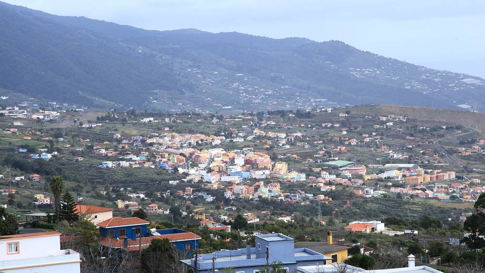

스페인 라팔마섬 시민 협동조합 '에네르히아 보니타' 5년…조합원 320명 넘어, 학교 지붕 8곳에 태양광 626kW

전기 90%가 화석연료인 섬에서 화산 분화 속 출범한 비영리 소비자 협동조합, 자치정부·시가 내준 학교 지붕에 공유 자가소비 설비…일부는 1년 넘게 가동 대기, 조합 "배전회사가 되풀이되는 문제의 원인"
스페인 카나리아제도 라팔마섬의 시민 에너지공동체 '에네르히아 보니타(Energía Bonita)'가 이달 설립 5주년을 맞았으며, 섬의 첫 재생에너지 공동체 소비 협동조합으로 출발한 이 조합의 개인·단체 조합원은 320명을 넘었다. 2021년 10월 협동조합 운동에 몸담은 주민들이 공증인 앞에서 조합을 세운 때는 타호가이테 화산 분화와 겹쳐 일부 이사가 자기 집을 걱정해야 했고, 섬 전기의 90%를 화석연료에 기대며 사실상 전부를 로스 긴초스(Los Guinchos) 화력발전소에서 얻는 구조를 벗어나 섬 안에서 재생에너지를 만들고 시민이 자기 에너지를 관리하자는 것이 출범 목적이었다. 비영리 소비자·이용자 협동조합인 이 조합은 카나리아 자치정부와 브레냐 알타(Breña Alta) 시가 내준 초·중등학교 지붕 8곳에 합계 626kW의 공유 자가소비 태양광을 설치했으며, 사업비는 50만 유로가 넘는다. 조합은 2025년 카나리아 지속가능경제상을 받았고, EU '유럽 에너지공동체 기금(European Energy Communities Facility)' 지원 약 700건 가운데 뽑혀 받은 4만5,000유로로 공유 전기차 이동 모델을 설계하고 있으며, 중요한 결정은 조합원 총회에서 함께 내린다. 그러나 조합은 다 지은 설비 일부가 1년 넘게 준비를 마치고도 계통 접속 문제와 학교 건물 전기설비 결함으로 돌지 못한다며 엔데사 계열 배전회사 이디스트리부시온(Edistribución)을 되풀이되는 문제의 원인으로 지목했고, 타사코르테 설비는 4월 가동 통지 뒤 답이 없고 청구서 발행 오류와 발전 데이터 차단으로 조합 수입이 막혔으며 한 고교 설비에서는 참여자 데이터가 예고 없이 두 차례 막혀 조합원이 청구서를 받지 못했다고 주장했다. 조합은 규제기관이 배전회사의 의무 이행을 감독해야 한다고 요구했으며, 이디스트리부시온의 입장은 나오지 않았다.
시민에너지 관점
전기의 90%를 화석연료에 기대는 섬에서 320명이 넘는 시민이 학교 지붕 8곳을 빌려 626kW를 세웠다는 것은, 공공건물 지붕과 시민 출자를 묶으면 큰 자본 없이도 지역 에너지 구조에 틈을 낼 수 있다는 뜻이다. 덴마크 삼쇠섬도 주민과 지역이 함께 소유한 풍력으로 섬이 쓰는 전기를 스스로 만들게 되면서 '에너지 섬'의 본보기가 됐다. 시민 협동조합이 공공시설 설비를 감당할 수 있겠느냐는 걱정이 있지만, 이 조합의 발목을 잡은 것은 조합의 역량이 아니라 1년 넘는 접속 지연과 데이터 차단이었다. 국내에서도 학교·공공청사 지붕을 주민 협동조합에 우선 내주고, 계통 접속 처리에 기한을 정해 배전 사업자가 지키게 해야 한다.
출처: tvlapalma.com 2026-11-04 기자 미표기 원문 보기
スペイン・ラパルマ島の市民協同組合「エネルヒア・ボニータ」5年…組合員320人超、学校の屋根8カ所に太陽光626kW
電力の90%を化石燃料に頼る島で火山噴火のさなかに発足した非営利の消費者協同組合、自治州政府と市が提供した学校の屋根に共同自家消費設備…一部は1年以上稼働待ち、組合「配電会社が繰り返す問題の原因」
スペイン・カナリア諸島ラ・パルマ島の市民エネルギー共同体「エネルヒア・ボニータ（Energía Bonita）」が今月、設立5周年を迎えた。島初の再生可能エネルギー共同体消費協同組合として出発したこの組合の個人・団体の組合員は320人を超えた。2021年10月、協同組合運動に携わる住民が公証人の前で組合を設立した時期はタホガイテ火山の噴火と重なり、一部の理事は自宅の心配をしなければならなかった。島の電力の90%を化石燃料に頼り、事実上すべてをロス・ギンチョス（Los Guinchos）火力発電所から得る構造から抜け出し、島内で再生可能エネルギーをつくって市民が自らのエネルギーを管理することが発足の目的だった。非営利の消費者・利用者協同組合であるこの組合は、カナリア自治州政府とブレニャ・アルタ（Breña Alta）市が提供した小中学校の屋根8カ所に合計626kWの共同自家消費型太陽光を設置し、事業費は50万ユーロを超える。組合は2025年にカナリア持続可能経済賞を受賞し、EUの「欧州エネルギー共同体基金（European Energy Communities Facility）」で約700件の応募から選ばれて得た4万5,000ユーロで共有電気自動車による移動モデルを設計しており、重要な決定は組合員総会で共に行う。しかし組合は、完成した設備の一部が1年以上準備を終えながら系統接続の問題と校舎の電気設備の欠陥で稼働できずにいるとして、エンデサ系の配電会社エディストリブシオン（Edistribución）を繰り返す問題の原因と名指しした。タサコルテの設備は4月の稼働通知以降返答がなく、請求書発行の誤りや発電データの遮断で組合の収入が止まり、ある高校の設備では参加者データが予告なく2度遮断されて組合員が請求書を受け取れなかったと主張し、規制当局に配電会社の義務履行を監督するよう求めた。エディストリブシオン側の見解は示されていない。
市民エネルギーの視点
電力の90%を化石燃料に頼る島で、320人を超える市民が学校の屋根8カ所を借りて626kWを設置したことは、公共建築物の屋根と市民の出資を組み合わせれば、大きな資本がなくても地域のエネルギー構造に風穴を開けられることを意味する。デンマークのサムソ島も、住民と地域が共に所有する風力で島が使う電力を自らまかなうようになり、「エネルギーの島」の手本となった。市民協同組合に公共施設の設備が担えるのかという懸念もあるが、この組合の足を引っ張ったのは組合の力量ではなく、1年を超える接続の遅れとデータの遮断だった。韓国でも学校や公共庁舎の屋根を住民協同組合に優先して提供し、系統接続の処理に期限を定めて配電事業者に守らせるべきだ。
出典: TVラ・パルマ（tvlapalma.com） 2026-11-04 記者名なし 原文を読む
西班牙拉帕尔马岛市民合作社"美丽能源"成立5年…社员逾320人，8所学校屋顶装设626kW光伏
在90%电力依赖化石燃料的岛上、于火山喷发期间成立的非营利消费者合作社，在自治区政府和市政府提供的学校屋顶建设共享自用发电设施…部分设施等待并网超过一年，合作社称"配电公司是问题反复出现的根源"
西班牙加那利群岛拉帕尔马岛的市民能源社区"美丽能源（Energía Bonita）"本月迎来成立5周年。这家以岛上首个可再生能源社区消费合作社起步的合作社，个人和团体社员已超过320人。2021年10月，投身合作社运动的居民在公证人面前正式成立合作社，当时正值塔霍加伊特火山喷发，部分理事还得为自家房屋担忧。岛上90%的电力依赖化石燃料，几乎全部来自洛斯金乔斯（Los Guinchos）火电厂，合作社成立的目的就是摆脱这种结构，在岛内生产可再生能源，让市民自己管理能源。这家非营利消费者和用户合作社在加那利自治区政府和布雷尼亚阿尔塔（Breña Alta）市提供的8所中小学屋顶上安装了合计626kW的共享自用光伏，项目费用超过50万欧元。合作社2025年获得加那利可持续经济奖，并在欧盟"欧洲能源社区基金（European Energy Communities Facility）"约700份申请中脱颖而出，获得4.5万欧元，用于设计共享电动汽车出行模式；重要决定由社员大会共同作出。然而，合作社表示，部分已建成的设施准备就绪一年多，却因并网问题和校舍电气设施缺陷而无法运行，并点名恩德萨旗下配电公司Edistribución是问题反复出现的根源。合作社称，塔萨科尔特的设施4月发出启用通知后至今没有回音，账单开具错误和发电数据被封锁使合作社收入受阻，一所高中的设施参与者数据两次在无预告的情况下被封锁，导致社员收不到电费账单；合作社要求监管机构监督配电公司履行义务。Edistribución方面尚未表态。
市民能源视角
在90%电力依赖化石燃料的岛上，320多名市民借用8所学校的屋顶建起626kW光伏，说明只要把公共建筑屋顶与市民出资结合起来，即使没有大资本也能撬动地方能源结构。丹麦萨姆索岛也是依靠居民和地方共同拥有的风电自给岛上用电，成为"能源岛"的典范。有人担心市民合作社能否承担公共设施上的发电设备，但拖住这家合作社的并不是它的能力，而是一年多的并网延误和数据封锁。韩国也应优先把学校和公共办公楼屋顶提供给居民合作社，并为并网处理设定期限，要求配电企业遵守。
来源: 拉帕尔马电视台（tvlapalma.com） 2026-11-04 未署名 查看原文
La Palma's citizen cooperative Energía Bonita turns five — more than 320 members and 626kW of solar on eight school roofs
A non-profit consumer cooperative founded during a volcanic eruption on an island that gets 90% of its power from fossil fuels has built shared self-consumption plants on school roofs lent by the regional government and a town council; some have waited more than a year to start, and the co-op blames the distribution company
Energía Bonita, a citizen energy community on La Palma in Spain's Canary Islands, marks its fifth anniversary this month, and the island's first community renewable-energy consumer cooperative now has more than 320 individual and organisational members. Residents active in the cooperative movement formally founded it before a notary in October 2021, at the same time as the Tajogaite volcano erupted, when some board members feared for their own homes; its aim was to break with an island that relies on fossil fuels for 90% of its electricity, nearly all of it from the Los Guinchos power station, by generating renewable power locally and letting citizens manage their own energy. The non-profit consumer and user cooperative has installed eight shared self-consumption solar arrays totalling 626kW on the roofs of primary and secondary schools provided by the Canary Islands government and the town of Breña Alta, at a cost of more than €500,000. It won the 2025 Canary Islands Sustainable Economy Prize, was selected from about 700 applicants for €45,000 from the EU's European Energy Communities Facility to design a shared electric-car mobility model, and takes major decisions together at members' assemblies. But the cooperative says some finished arrays have been ready for more than a year and still cannot operate because of grid connection problems and faults in school electrical systems, and it names the Endesa-owned distribution company Edistribución as the recurring source of the problems. It says a start-up notice for its Tazacorte array sent in April has gone unanswered, billing errors and blocked access to generation data have kept it from receiving income, and participant data at one secondary school installation was blocked twice without warning, leaving members without electricity bills; it is calling on the regulator to make sure the distributor meets its obligations, and Edistribución's response has not been reported.
Citizen Energy View
That more than 320 citizens on an island dependent on fossil fuels for 90% of its power have borrowed eight school roofs to install 626kW shows that combining public roofs with citizen investment can open a crack in a local energy system without big capital. Denmark's Samsø became a model "energy island" in the same way, producing the power it uses from wind turbines owned by residents and the local community. There are doubts about whether a citizen cooperative can handle installations on public buildings, but what has held this one back is not its capacity but connection delays of more than a year and blocked data. Korea, too, should offer school and public-building roofs to residents' cooperatives first and set connection deadlines that grid operators must meet.
Source: tvlapalma.com 2026-11-04 No byline Read the original